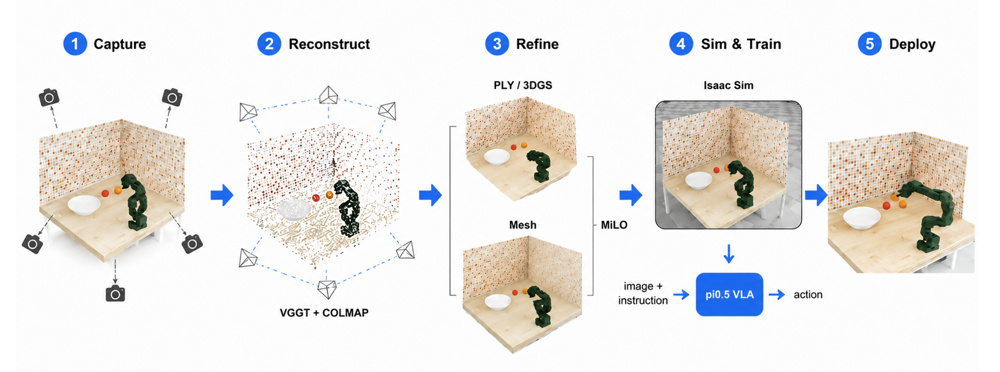

Real Scene Capture
Capture multi-view RGB images of the target tabletop workspace.
Sim-to-Real · VLA · Digital Twin · LeRobot
We reconstruct a real tabletop manipulation scene into an Isaac Sim digital twin, generate simulated demonstrations, fine-tune a pi0.5-based VLA policy, and deploy the policy in the real workspace.
Built on top of the LeIsaac / LeRobot workflow for IsaacLab-based data collection, dataset conversion, and robot policy training.
Recon2Act follows a real-to-sim-to-real pipeline: capture the real scene, reconstruct and refine the 3D workspace, import the digital twin into Isaac Sim, train a VLA policy in simulation, and evaluate deployment on the real robot.

Capture multi-view RGB images of the target tabletop workspace.
Recover camera poses and point-cloud geometry using VGGT and COLMAP.
Use MiLO to refine the reconstruction into PLY / 3DGS and mesh assets.
Import the reconstructed scene into Isaac Sim and align the robot workspace.
Generate simulated demonstrations and fine-tune a pi0.5-based VLA policy.
Deploy the policy in the physical workspace and analyze transfer failures.
The policy uses front and wrist camera observations. The following videos should be placed in assets/.
Real front camera
Real wrist camera
Simulation front camera
Simulation wrist camera
Digital-twin-based simulation is useful for scalable VLA demonstration generation, but robust real-world deployment remains difficult. We observed failure factors including residual visual and physical sim-to-real gaps, current VLA capability limits, and joint-level error accumulation in the LeRobot execution pipeline.
@misc{recon2act2026,
title = {Recon2Act: Digital-Twin-Based Sim-to-Real VLA Training},
author = {Lee, Chanwoo and Jeong, Seungheon and Yang, Jeoungwoo},
year = {2026},
url = {https://github.com/c0zyb1ue/Recon2Act}
}